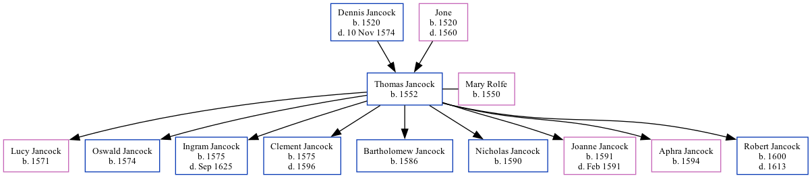

Thomas Jancock 1552 -
[ Home ] | [ Calendar ] | [ Surnames Index ] | [ Family History ]The child of Dennis Jancock and JoneThomas Jancock, the 11 times great-grandfather of Nigel Horne, was born in Canterbury, Kent, England in 1552 and married Mary Rolfe (with whom he had 9 children: Lucy, Oswald, Ingram, Clement, Bartholomew, Nicholas, Joanne, Aphra and Robert) on Nov 17, 1589.
Parents
- Dennis was born in 1520
- Jone was born in 1520
Children
- Lucy was born in 1571
- Oswald was born in 1574
- Ingram was born in 1575
- Clement was born in 1575
- Bartholomew was born in 1586
- Nicholas was born in 1590
- Joanne was born in 1591
- Aphra was born in 1594
- Robert was born in 1600
Family Tree
Generated by ged2site. Last updated on Nov 13, 2024